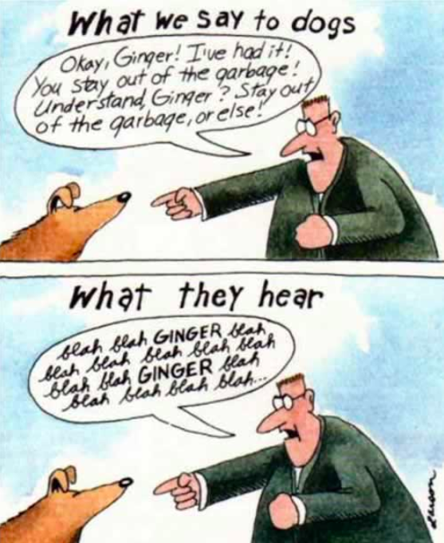
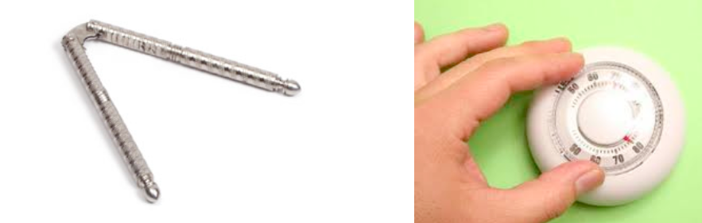

Don't Make Me Think
This is an excellent introductory book for people interested in user experience.
Make your interfaces self-evident enough so that your neighbour can say, “Oh, it’s a ______.” A couple of things that make us think:
- Labels
- Things that don’t look like what they are. This concept is called affordances (see Don Norman’s excellent book - Design of Everyday Things)
Let’s look at examples from the Don't Make Me Think book:
Why is it so important to not make me think?
- It’s not this...
On the Internet, the competition is just one click away, so if you frustrate users they’ll head somewhere else. - It’s more this...
Making pages self-evident makes everything seem better. - And this...
People are going to spend far less time looking at the pages we design than we’d like to think. - And good design makes people happy. Just listen to Don Norman talk about it:
We don't think. We are scanning, satisficing, and muddling through.
This is what scanning means
Scanning looks like this too. We scan and filter for what's important to us at the same time.
We don’t read, we scan - but why do we scan?
- We’re usually in a hurry
- We know we don’t need to read everything
- We’re good at it
Satisficing
- Choosing the first reasonable option
- It’s how firefighters, pilots, chessmasters, and nuclear power plan operators make important decisions within constraints of time, with limited information, vague goals, and changing conditions
- The word and concept came from this book - Sources of Power:
Why do we satisfice?
- We’re usually in a hurry
- There’s not much of a penalty for guessing wrong
- Weighing options may not improve our chances
- Guessing is more fun
We don’t figure out how things work. We muddle through.
Why do we muddle through?
- It’s not important to us
- If we find something that works, we stick to it
Web a.k.a. Billboard design
We scan, satisfice, and muddle through. We don't like to think. How can we design for these conditions? It sounds like we are designing for billboards. If people are using the web like billboards, then let's design great billboards.
Create a clear visual hierarchy
- The more important a thing is, the more prominent it is
- Things that are related logically are also related visually
- Things are “nested” visually to show what’s part of what
- If no clear visual hierarchy exists on your interface, then the experience slows and it feels worse (even though the visitor might eventually figure it out)
Mindless Choices
- It doesn’t matter how many times I have to click, as long as each click is a mindless, unambiguous choice
- The 3-click (sometimes 4 or 5) rule becomes less important
- Exceptions: sites that I visit repeatedly, or applications should aim for fewer clicks to get to the content

Writing for the web
- Get rid of half the words on each page, then get rid of half of what’s left
- Reduce “happy talk” and instructions, do not reduce content
- Why?
- It reduces the noise level on the page
- It makes the useful content more prominent
- It makes the pages shorter, allowing users to see more of each page at a glance without scrolling
Try to identify the happy talk in the following screen shots:

Consistency and Conventions
When people are accustomed to a set of interactions, they think less about them. So use well-established patterns when you can. Think carefully before you start breaking away from convention.
- Conventions are useful and they make your job easier
- Designers are often reluctant to take advantage of them
Innovate when you know you have a better idea, but take advantage of conventions when you don’t - Examples include: expand/collapse, links, navigation structures, shopping carts
Break up pages into clearly defined areas
Make the clickable look clickable
But it depends... on what?
Do you need the buttons to look like buttons on the sites above?
Keep the noise to a dull roar
- Busyness: if everybody is shouting, you cannot hear a single person
- Background noise: constant visual noise. e.g. lines on tables